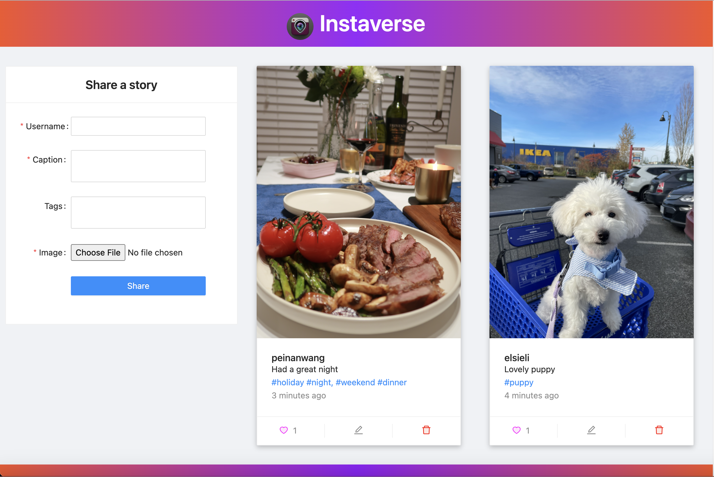

Instagram Clone - React.JS Practice
MERN; Redux
This is an online photo-sharing application build using MERN (MongoDB, Express, React, Node) stack. It supports basic Instagram functionalities such as story posting, commenting, and profile management.
This is a personal project to practice React.JS and Redux. I successfully implemented core functionalities including Post, Edit, Delete, and Like. I used Redux as a state management tool to maintain and update data across components. I setup routes, controllers, and server/client architecture to ensure the scalability of the project. And I setup environmental variables to manage database credentials

For more details, please check out my GitHub page.